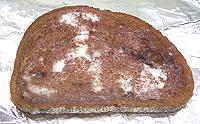
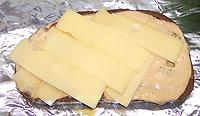
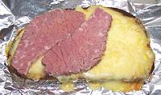

|
|
Corned Beef
Sauerkraut
Bread (1)
Butter
Russian Dressing
Swiss Cheese
------------



|
Do Ahead
- Cook you CORNED BEEF BRISKET per the package instructions or
just simmer it 2-1/2 hours in water to cover. Cool thoroughly.
- Make your Russian Dressing.
Make
- Drain good quality SAUERKRAUT well.
- Toast BREAD and butter one side only. If making a closed
sandwich do two slices. The buttered side is the outside.
- Spread Russian Dressing on the unbuttered side - thick if
open faced, thinner on both slices if closed.
- Arrange slices of SWISS CHEESE to the thickness you desire
over the Russian dressing - on both slices but thinner if closed.
- Put the bread cheese side up under a pre-heated broiler and heat
until the cheese is well melted.
- Arrange slices of Corned Beef over the cheese, then plenty
of Sauerkraut over the corned beef. If closed, top with the
second slice of bread, cheese side down.
- Serve immdiately. The bread and cheese should be warm, the corned
beef and sauerkraut cool.
NOTES:
-
Bread: Officially the bread is
pumpernickel, but that's pretty scarce around here, so I use Ukranian
black bread which is plentiful.
-
History: The Reuben was invented independently in
New York and Omaha, men named Reuben involved in both cases. The
Omaha version is universal today - the New York version used ham and
cole slaw, making it entirely off limits for Jewish Delis. New York
style is an open faced sandwich as shown, and the Omaha style caps it
with a second slice of bread.
- U.S. measure: t=teaspoon,
T=Tablespoon, c=cup, qt=quart, oz=ounce,
#=pound, cl=clove in=inch, ar=as required
tt=to taste
|